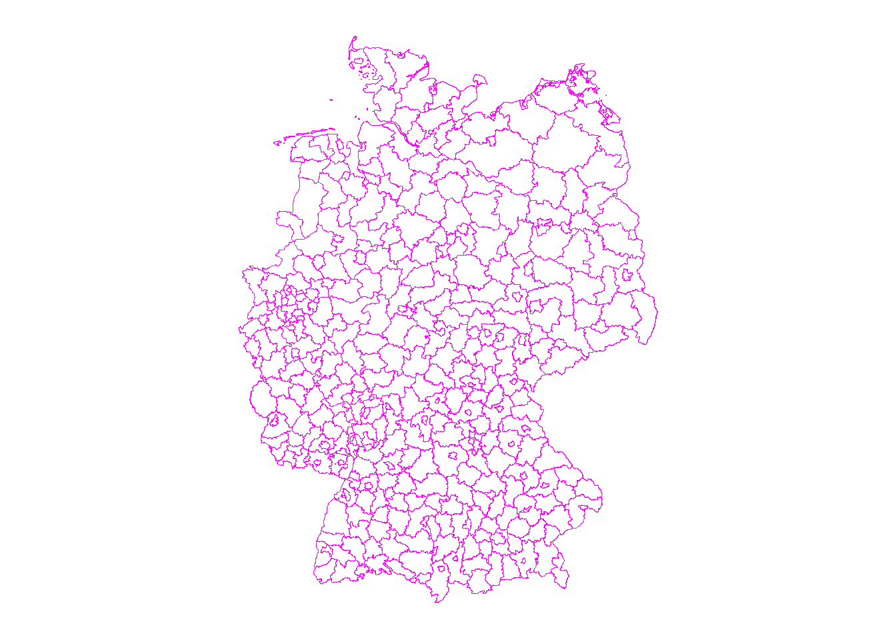
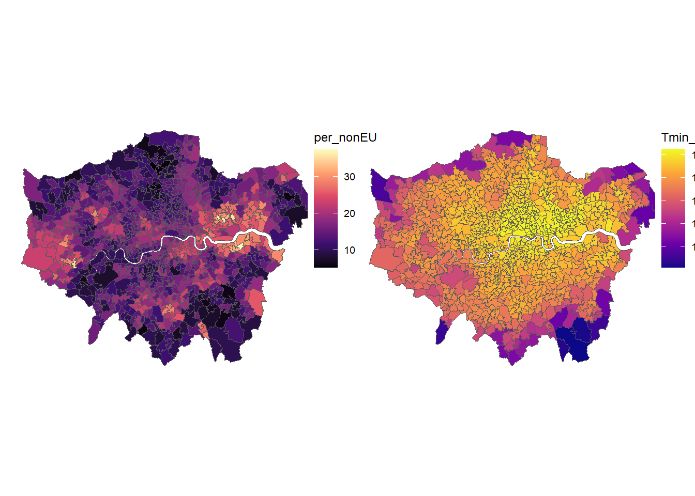

3 Exercises I
\[ \newcommand{\Exp}{\mathrm{E}} \newcommand\given[1][]{\:#1\vert\:} \newcommand{\Cov}{\mathrm{Cov}} \newcommand{\Var}{\mathrm{Var}} \newcommand{\rank}{\mathrm{rank}} \newcommand{\bm}[1]{\boldsymbol{\mathbf{#1}}} \]
Required packages
Session info
R version 4.4.1 (2024-06-14 ucrt)
Platform: x86_64-w64-mingw32/x64
Running under: Windows 11 x64 (build 22631)
Matrix products: default
locale:
[1] LC_COLLATE=English_United Kingdom.utf8
[2] LC_CTYPE=English_United Kingdom.utf8
[3] LC_MONETARY=English_United Kingdom.utf8
[4] LC_NUMERIC=C
[5] LC_TIME=English_United Kingdom.utf8
time zone: Europe/Berlin
tzcode source: internal
attached base packages:
[1] stats graphics grDevices utils datasets methods
[7] base
other attached packages:
[1] ggthemes_5.1.0 ggplot2_3.5.1 viridisLite_0.4.2
[4] tmap_3.3-4 spatialreg_1.3-4 Matrix_1.7-0
[7] spdep_1.3-5 spData_2.3.1 mapview_2.11.2
[10] sf_1.0-16
loaded via a namespace (and not attached):
[1] tidyselect_1.2.1 dplyr_1.1.4 fastmap_1.2.0
[4] leaflet_2.2.2 TH.data_1.1-2 XML_3.99-0.16.1
[7] digest_0.6.35 lifecycle_1.0.4 LearnBayes_2.15.1
[10] survival_3.6-4 terra_1.7-78 magrittr_2.0.3
[13] compiler_4.4.1 rlang_1.1.4 tools_4.4.1
[16] utf8_1.2.4 knitr_1.47 htmlwidgets_1.6.4
[19] sp_2.1-4 classInt_0.4-10 RColorBrewer_1.1-3
[22] multcomp_1.4-25 abind_1.4-5 KernSmooth_2.23-24
[25] purrr_1.0.2 withr_3.0.0 leafsync_0.1.0
[28] grid_4.4.1 stats4_4.4.1 fansi_1.0.6
[31] e1071_1.7-14 leafem_0.2.3 colorspace_2.1-0
[34] scales_1.3.0 MASS_7.3-60.2 dichromat_2.0-0.1
[37] cli_3.6.2 mvtnorm_1.2-5 rmarkdown_2.27
[40] generics_0.1.3 rstudioapi_0.16.0 tmaptools_3.1-1
[43] DBI_1.2.3 proxy_0.4-27 stringr_1.5.1
[46] splines_4.4.1 stars_0.6-5 parallel_4.4.1
[49] s2_1.1.6 base64enc_0.1-3 vctrs_0.6.5
[52] boot_1.3-30 sandwich_3.1-0 jsonlite_1.8.8
[55] crosstalk_1.2.1 units_0.8-5 glue_1.7.0
[58] lwgeom_0.2-14 codetools_0.2-20 stringi_1.8.4
[61] gtable_0.3.5 deldir_2.0-4 raster_3.6-26
[64] munsell_0.5.1 tibble_3.2.1 pillar_1.9.0
[67] htmltools_0.5.8.1 satellite_1.0.5 R6_2.5.1
[70] wk_0.9.1 evaluate_0.24.0 lattice_0.22-6
[73] png_0.1-8 class_7.3-22 Rcpp_1.0.12
[76] coda_0.19-4.1 nlme_3.1-164 xfun_0.45
[79] zoo_1.8-12 pkgconfig_2.0.3 Reload data from pervious session
load("_data/msoa2_spatial.RData")3.1 General Exercises
3.1.1 1) Can you import the spatial administrative units of Germany (“Kreisgrenzen_2020_mit_Einwohnerzahl” in _data folder) and make a simple plot of the boundaries? {.unnumbered}
# Import shape file layer
ger.sdpf <- st_read(dsn = "_data/Kreisgrenzen_2020_mit_Einwohnerzahl",
layer = "KRS_ew_20")Reading layer `KRS_ew_20' from data source
`C:\work\Lehre\Geodata_Spatial_Regression\_data\Kreisgrenzen_2020_mit_Einwohnerzahl'
using driver `ESRI Shapefile'
Simple feature collection with 401 features and 19 fields
Geometry type: MULTIPOLYGON
Dimension: XY
Bounding box: xmin: 5.86625 ymin: 47.27012 xmax: 15.04182 ymax: 55.05878
Geodetic CRS: WGS 84# Plot via ggplot
gp <- ggplot(ger.sdpf)+
geom_sf( color = "magenta", fill = NA)+
coord_sf(datum = NA)+
theme_map()
gp
2) What is the Coordinate reference system of this German shape file?
st_crs(ger.sdpf)Coordinate Reference System:
User input: WGS 84
wkt:
GEOGCRS["WGS 84",
DATUM["World Geodetic System 1984",
ELLIPSOID["WGS 84",6378137,298.257223563,
LENGTHUNIT["metre",1]]],
PRIMEM["Greenwich",0,
ANGLEUNIT["degree",0.0174532925199433]],
CS[ellipsoidal,2],
AXIS["latitude",north,
ORDER[1],
ANGLEUNIT["degree",0.0174532925199433]],
AXIS["longitude",east,
ORDER[2],
ANGLEUNIT["degree",0.0174532925199433]],
ID["EPSG",4326]]4) Below we will load some additional data on heat islands.
We will add some Data about London’s Urban Heat Island. It contains information about the mean temperature at midnight during the summer of 2011.
This is a tif file that we need to read in with stars and then transform into sf.
Loading required package: abind# Read geo_tif with stars
urbclim <- read_stars("https://data.london.gov.uk/download/ae16d5af-5dce-49bc-b1e2-88bb41e8bfd0/f4e3a05d-fad7-4b56-8c42-ba2274f3bb3a/London_Tmin_midnight_2011.tif")
# urbclim <- read_stars("_data/London_Tmin_midnight_2011.tif")
# Transfer to sf
urbclim.spdf <- st_as_sf(urbclim)
names(urbclim.spdf)[1] <- "Tmin_midnight"On which projection is the urbclim temperature data?
Can you please calculate the average night-time temperature for each MSOA using area weighted interpolation. Make sure that the objects are on the same projections / crs.
Create a map showing the temperature for each MSOA, and plot it next to the maps of non-EU immigrant residents (e.g. using
grid.arrange()) .
# Check projection
st_crs(urbclim.spdf)Coordinate Reference System:
User input: unnamed
wkt:
PROJCRS["unnamed",
BASEGEOGCRS["Unknown datum based upon the GRS 1980 ellipsoid",
DATUM["Not specified (based on GRS 1980 ellipsoid)",
ELLIPSOID["GRS 1980",6378137,298.257222101004,
LENGTHUNIT["metre",1]]],
PRIMEM["Greenwich",0,
ANGLEUNIT["degree",0.0174532925199433]],
ID["EPSG",4019]],
CONVERSION["Lambert Azimuthal Equal Area",
METHOD["Lambert Azimuthal Equal Area",
ID["EPSG",9820]],
PARAMETER["Latitude of natural origin",52,
ANGLEUNIT["degree",0.0174532925199433],
ID["EPSG",8801]],
PARAMETER["Longitude of natural origin",10,
ANGLEUNIT["degree",0.0174532925199433],
ID["EPSG",8802]],
PARAMETER["False easting",4321000,
LENGTHUNIT["metre",1],
ID["EPSG",8806]],
PARAMETER["False northing",3210000,
LENGTHUNIT["metre",1],
ID["EPSG",8807]]],
CS[Cartesian,2],
AXIS["(E)",east,
ORDER[1],
LENGTHUNIT["metre",1]],
AXIS["(N)",north,
ORDER[2],
LENGTHUNIT["metre",1]]]# Add id
urbclim.spdf$id <- rownames(urbclim.spdf)
# Bring on common crs
urbclim.spdf <- st_transform(urbclim.spdf, crs = st_crs(msoa.spdf))
# Use area weights interpolation to merge
msoa.spdf <- aw_interpolate(
msoa.spdf,
tid = "MSOA11CD",
source = urbclim.spdf,
sid = "id",
weight = "sum",
output = "sf",
intensive = "Tmin_midnight"
)# Make map of Temperature
gp2 <- ggplot(msoa.spdf)+
geom_sf(aes(fill = Tmin_midnight))+
scale_fill_viridis_c(option = "C")+
coord_sf(datum = NA)+
theme_map()+
theme(legend.position = c(.9, .4))
# Plot two ggplot maps next to each other
gp <- grid.arrange(gp1, gp2, nrow = 1)
gpTableGrob (1 x 2) "arrange": 2 grobs
z cells name grob
1 1 (1-1,1-1) arrange gtable[layout]
2 2 (1-1,2-2) arrange gtable[layout]